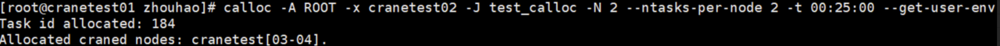

calloc 提交交互式任务
calloc 使用命令行指定的参数申请资源，任务启动时，会进入新的用户终端，用户需要自行登陆到计算节点并启动任务。calloc需要在有cfored运行的节点上启动。
calloc 只支持通过命令行指定请求参数，支持的命令行选项：
- --help/-h：显示帮助
- -A/--account string：提交作业的账户
- -D/--chdir string：任务工作路径
- -C/--config string：配置文件路径(默认 "/etc/crane/config.yaml")
- -c/--cpus-per-task float：每个节点申请的CPU核心数
- -J/--job-name string：作业名
- --mem string：每个节点申请的内存大小
- -N/--nodes uint32：申请的节点数量
- --ntasks-per-node uint32：每个节点上运行的任务数量
- -p/--partition string：作业使用的分区/队列
- -q/--qos string：指定作业使用的qos名称-
- -t/--time string：作业的最长运行时间
- -w/--nodelist string：提交作业到指定节点运行
- -x/--exclude string：提交的作业排除某些指定节点运行
- --export string：设置环境变量
- --get-user-env：获取用户的环境变量
- --gres： 任务申请的设备资源量
- 格式为name:type:count如GPU:A100:2 或者name:count如GPU:2，由调度器决定分配给任务的设备type
- -v/--version: 查询版本号
- --debug-level string: 日志输出等级
- --json: json格式输出命令执行结果
calloc -h

退出calloc新启动的终端将结束任务。
在CPU分区，申请两个个节点，一个CPU核心，200M内存
calloc -c 1 --mem 200M -p CPU -N 2
运行结果：

例：在GPU分区下，申请一个节点，每个节点上运行两个任务，申请节点的候选列表为crane02,crane03，且任务提交在acct-yan账户下
calloc -A acct-test --ntasks-per-node 2 -w crane02,crane03 -p GPU -N 1
例：在CPU分区下，申请200M内存，任务运行最长时间为25分钟25秒，且任务运行在test-qos下
calloc --mem 200M -p CPU -q test-qos -t 00:25:25
calloc -D /path

calloc --debug-level trace
calloc -x cranetest02

calloc --get-user-env
calloc -J job_name